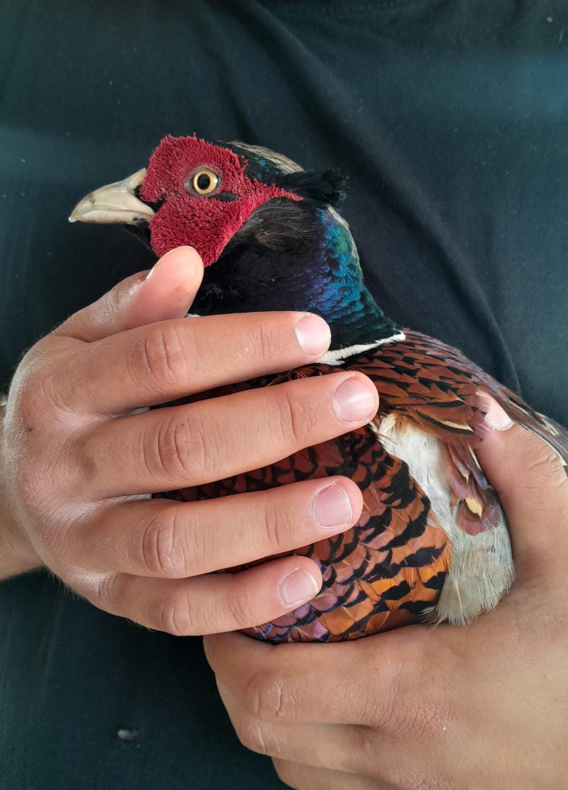
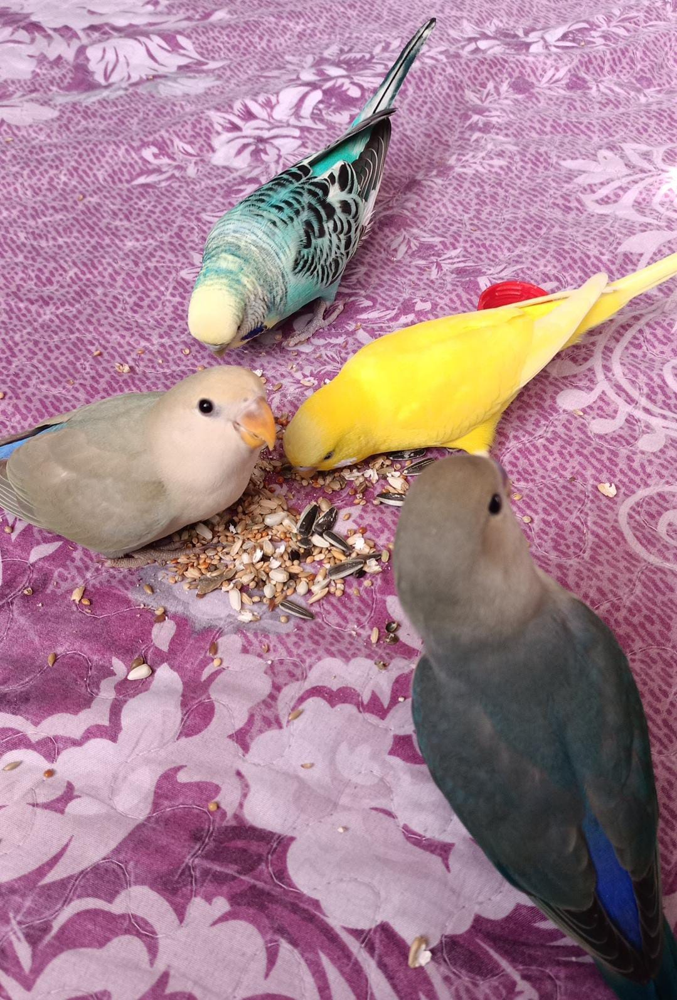
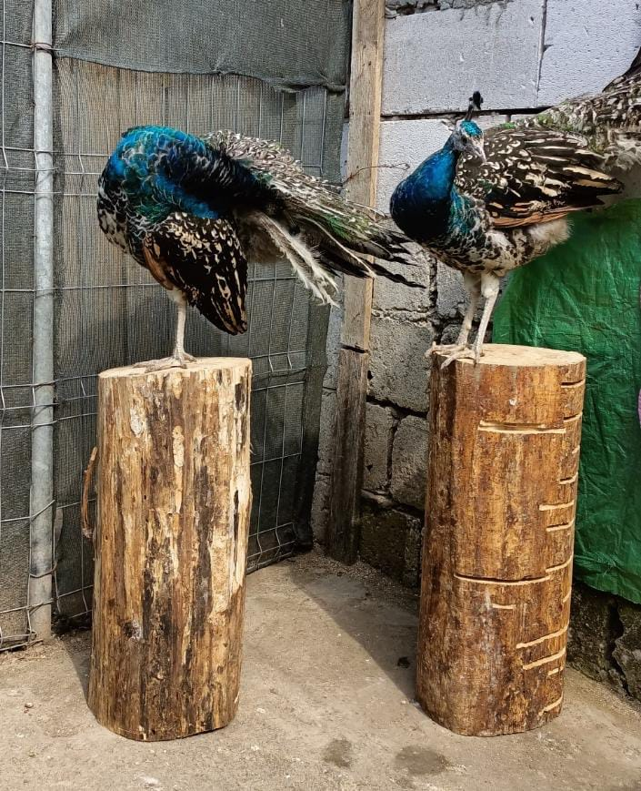
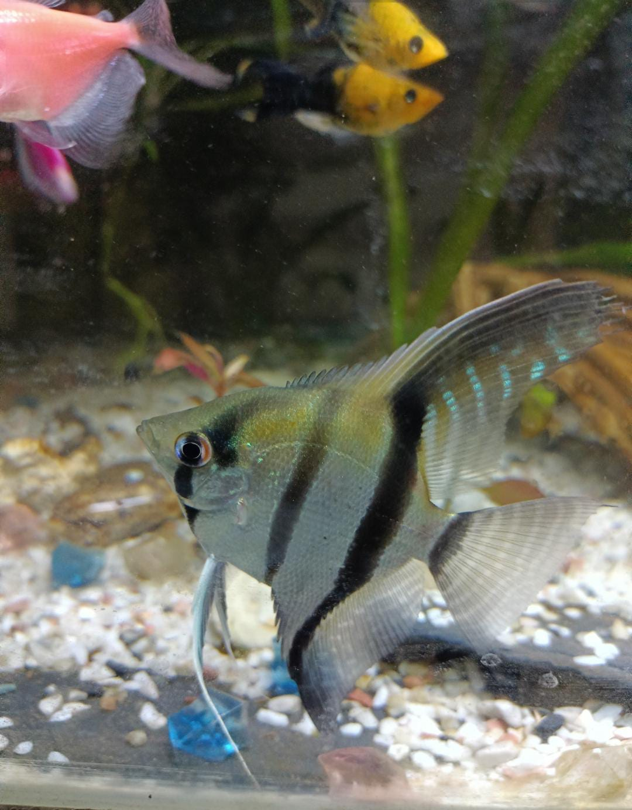

Eu sunt Marius Tarcau, un simplu baiat de 17 ani din comuna Prundu,
judetul Giurgiu.
De mic mi-au placut animalele, asa ca am inceput sa le cresc: iepuri,
papagali si pesti. Cu timpul nu am mai investit in aceasta pasiune, dar in
timpul pandemiei mi-am dat seama ca, de fapt, nu doar ca imi plac extrem
de mult, ci si ca pot castiga din asta. Am inceput cu cateva animale, dar
am dat gres.
Abia in 2022 am inceput sa imi largesc ferma: am cumparat
primii pui de paun , din care am ramas cu 2 perechi. Am cumparat primele
25 oua de fazan , din care am scos 7 pui. In 2023, am reusit sa incubez
135 de oua de fazan de mai multe rase, din care am scos 30 de pui. De asemenea, am luat o pereche de papagal agapornis si un Micul Alexandru, alaturi de alte 3 nimfe pe care le aveam de ceva timp, avand ca scop inmultirea lor. Am inceput primii pasi in acvaristica, in cateva luni strangand deja 3 acvarii.
In 2024 estimez ca voi scoate undeva intre 50-80 de pui de fazan si cativa
de paun, iar in
2025 undeva la 200 de pui de fazan si 30 de pui de paun.
Intr-adevar, un inceput slab, putem spune, cand ne gandim la o
afacere ne gandim sa obtinem profit repede, dar, inainte de profit,
este pasiunea. Uitati cateva poze cu animalele mele:
|  |  |  |  |
| Fazan comun(Phasanius colchicus) | Papagali (agapornis rosseicollis si Melopsittacus undulatus) | Pauni umar negru(pavo cristatus) | Scalar(Pterophyllum Altum Peruensis) |
| Luni | Marti | Miercuri | Joi | Vineri | Sambata | Duminica |
| Curat la papagali | Curatenie la pesti | Curatenie la pauni | Curatenie la fazani | Curatenie la iepuri | Relaxare | Relaxare |
Cam asa mi-am aramjat saptamana pentru a fi mai eficient. Tineti cont ca pe langa aceste lucruri trebuie sa prioritizez scoala, si sa nu uit sa petrec timp cu familia si prietenii, iar vara si muncesc,lucruri pe care nu le-am mai trecut in acest tabel, pentru ca poate v-as descuraja prea tare pe cei la inceput de drum.
La inceput totul a fost ca o joaca. Apoi am inteles de fapt ca viata si calitatea vietii acestor animale tine de mine si cat de mult am grija de ele. M-au responsabilizat si m-au ajutat sa-mi zidesc un caracter mai puternic.
In adevar, insusirile nevazute ale Lui, puterea Lui vesnica si dumnezeirea Lui se vad lamurit de la facerea lumii, cand te uiti cu bagare de seama in lucrurile facute de El. Romani 1:20Intotdeauna aceste frumuseti ale naturii ma fac sa ma gandesc la cat de mare este Dumnezeu, si chiar si lucrul acesta ma insfufleste sa continui. Si, daca ele sunt asa frumoase, cat de maret trebuie sa fie Creatorul lor?